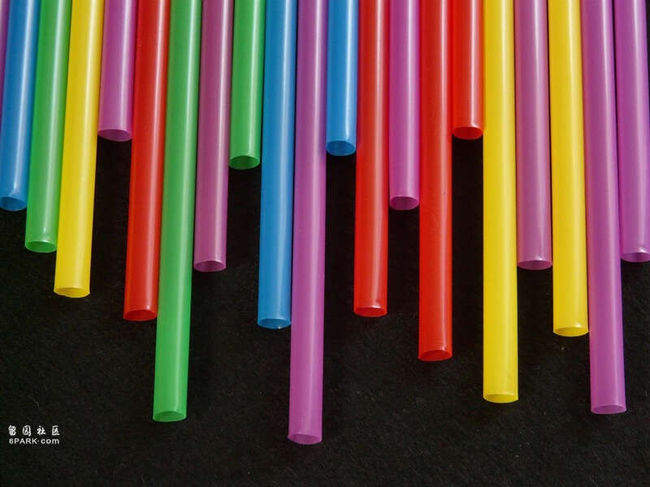

瑞典生物塑胶公司Gaia Biomaterials，研发出一款非塑胶且环保可堆肥的吸管，将成为环保新解方。 (图片来源/PEXELS)
据统计，全球每年的塑胶生产量高达4亿吨， 然而塑胶无法被自然分解，若未被妥善处理会对环境造成巨大的冲击，对此，联合国积极推动《全球塑胶公约》的制定，减塑成为重要议题。日前，瑞典的一家生物塑胶公司Gaia Biomaterials，研发出一款非塑胶且环保可堆肥的吸管，将成为环保新解方。
环保可堆肥吸管不仅能改善塑胶对环境带来的危害，也能解决纸吸管遇水变湿软的不便性，且有别于传统塑胶吸管不耐热的问题，Biodolomer可以承受超过80°C 的高温。
根据Gaia Biomaterials官方表示，这款性质与外观都与塑胶相似的吸管，所使用的材料Biodolomer，是一款以石灰石、 甘蔗、 植物油、酯类 等物质组成的全新材质。它不会留下任何塑胶微粒，可生物降解，并获得美国BPI 和欧洲认证机构的可堆肥认证，能转换为再生能源；且石灰石是主要成分之一，因此分解后还能够改善土壤的品质，并能减少80%的二氧化碳排放量。
除此之外，Biodolomer几乎可用于所有传统塑胶生产方法，如吹膜、3D 列印等，且生产过程中消耗的能源及排放的污染物质皆小于塑胶，故能代替传统塑胶，被广泛使用于袋子、餐具、瓶罐、杯子、盆栽、玩具等物品中。
这项全新的材质若能成功被广泛推广及使用，未来不仅能够确保生活的便利性，也能让我们在享受资源的同时，减少对环境的伤害。
Advertisements